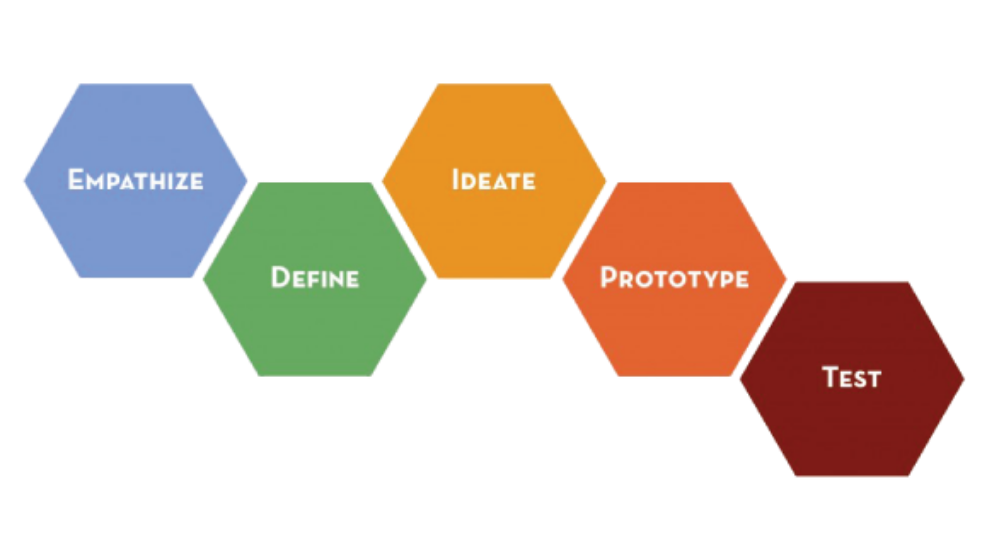
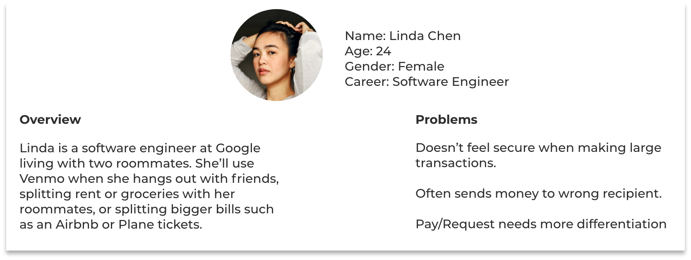
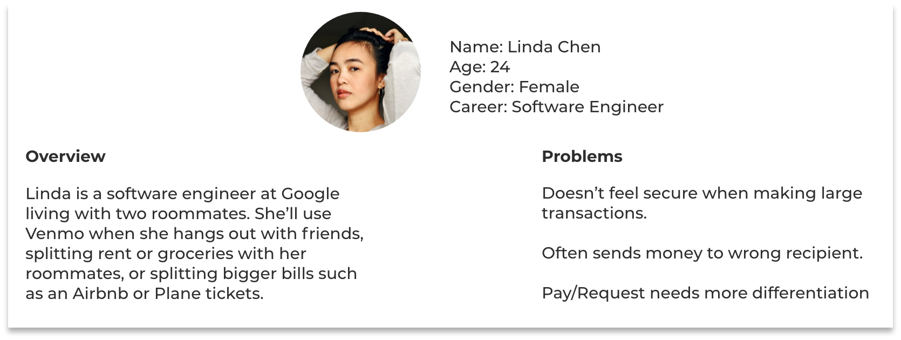
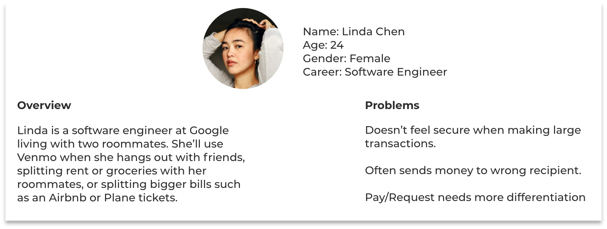

Venmo is an app that allows users to pay and request money
from any other user. At its core, Venmo provides a way to pay
off debts when cash is too cumbersome. I am an avid user
myself, and have realized that Venmo seems to be plagued by
issues. I gave myself two weeks to try and understand and
diagnose these issues.
My Role
User Researcher Designer Data Analyst
Design Process

EMPATHIZE
Interviews
I began the process by conducting a few in-depth interviews with
my friends and family who I knew were prominent users of the app.
I wanted to be able to be thorough in order to catch most of the
faults that exist in the app. Besides understanding who these users
were, I also wanted to have them tell me any problems they have
experienced already with the app (which were plentiful) and then
conducting a usability test.
Almost all of my interviewees expressed some issue, or seemed to
struggle with certain UI in the app.
DEFINE
Pain Points
Personas

Problem Statement
Venmo’s app is plagued with UI issues. Much of the design seems
obsolete or makes it harder for users to do what they intend. Lack of certain
functionalities and presence of too many extraneous ones are leading
to an unenjoyable UX.
IDEATE
Prioritization
I used the MoSCoW Method in order to start prioritizing my ideas in
terms of how feasible they were and how impactful they would be.
My focus will be on the ones in dark blue.
Task Flow
We created two task-flows. One is based off of a card-sorting activity we
conducted with users in our research, and the other for the whole app.
Paper Sketches
I proceeded to start sketching out the basic UI according to my flows,
personas, and needs that I created.
PROTOTYPE & TESTING
Wireframes
I began sketching out potential solutions to the pain points and prioritized
goals I had set.
I did a couple preliminary evaluations for my sketches and utilized the
feedback I received to refine my sketches to be converted into wires.
User Testing
After creating a few Hi-Fi prototypes, I began evaluating them via Nielsen’s
Usability Heuristics. Once I was satisfied, I ran A/B tests on specific features
I was unsure about.
Final Prototype
Prototype Demo
Validation
I returned to the intial group of interviewees and had them conduct a few
tasks that highlighted the pain points I targeted while I observed. I followed up with a debrief to collect
more data.
Based off of this feedback I believe I was successful in alleviating many of the
critical issues venmo currently has, however, there is always room for improvement.
In future steps I may try to focus more on how to enhance the search functionality
further through more user testing and ideation.

 
